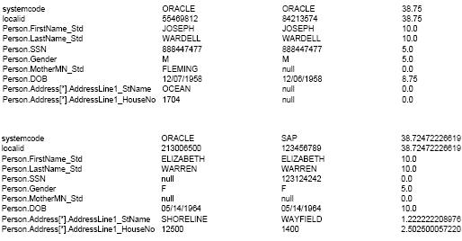

Performing a Match Analysis
Before you perform the actual data matching, you can perform match analyses on a subset of the data to be loaded to determine whether the various components of the match process are configured correctly. This analysis can show whether the data blocks defined for the blocking query are returning too many or too few records and whether certain fields in the match string are inaccurately skewing the composite match weight. You can also use this analysis to determine whether the duplicate and match threshold are correct.
This is an iterative process, and you might need to run through the analysis several times before you are satisfied that the match and query configuration is optimized for your data set.
Perform the following steps to analyze the data for matching:
Running the Bulk Matcher in Analysis Mode
When you run the Bulk Matcher in analysis mode, use a representative sample of the actual data you are loading into the master index database. You do not need to run the entire set of input records through the analysis.
Caution - If you are rerunning the Bulk Matcher in analysis mode, make sure to truncate the cluster synchronizer database tables first. Otherwise, unique constraint errors occur and the run fails. To truncate the tables, run cluster-truncate.sql against the cluster synchronizer database.
To Run the Bulk Matcher in Analysis Mode
- Complete the steps under Configuring the Initial Bulk Match and Load Tool.
- For each IBML Tool, open loader-config.xml (located in the IBML Tool home directory in the conf subdirectory).
- Set the matchAnalyzerMode property to true, and verify the remaining property settings.
- Save and close the file.
- Do one of the following:
- For Windows, navigate to the master IBML Tool home directory and double-click run.bat or type run from a command line.
- For UNIX, navigate to the master IBML Tool home directory and type sh run.sh at the command line.
- Examine the log files to be sure no errors occurred during the analysis.
- Continue to Reviewing the Match Analysis Results.
Reviewing the Match Analysis Results
The output of the Bulk Matcher when run in analysis mode is a PDF file with a list of records that were automatically matched to each other (assumed matches) from the data set you analyzed. The report displays the matching weight given to each field, so you can analyze the value and accuracy of each field for matching as well as the agreement and disagreement weights (or u-probabilities and m-probabilities) defined in the matching configuration file of the master index application.
The following figure shows two entries from the match analysis report. The name of each match field is listed in the left column, the values for those fields in the two assumed match records are listed in the next two columns, and the composite match weight and the weight for each field are listed in the final column.
Figure 2 Match Analysis Report Excerpt
After you perform the steps under Running the Bulk Matcher in Analysis Mode, complete the analysis by using the information in the match analysis report to do the following:
Look for records that are assumed matches but should not be. This might indicate that the match threshold is set too low for the number of match fields or that one or more fields are given too much weighting relevance.
Verify that fields that uniquely identify records, such as a social security number, are given a higher weight when they match.
Verify that null fields are being handled correctly.
If the assumed match records with the lowest composite match weights are definite matches of one another, the match threshold might be set too high. You might want to experiment with setting the match threshold lower and running another match analysis.
After you complete your analysis, you can reconfigure the matching logic as described inReviewing the Match Analysis Results and then rerun the analysis. If your analysis shows that the matching configuration is correct and does not require any more changes, continue to Performing the Bulk Match. If the matching configuration is correct, make sure to update the master index application to match the new configuration.
Reconfiguring the Matching Logic
If the results of the match analysis show that you need to modify the query, thresholds, or match string, you can make the changes to the IBML Tool configuration file and run the Bulk Matcher again to analyze the new settings. Once you are satisfied with the new settings, you need to update the master index application configuration accordingly.
To Reconfigure the Matching Logic
- Complete the match analysis, as describe under Reviewing the Match Analysis Results.
- In the directory where the IBML Tool is located, open conf/loader-config.xml.
- To modify the match and duplicate thresholds for match analysis, enter new values for the duplicateThreshold and matchThreshold elements.
- To modify the blocking query for match analysis, modify the query builder section (described in Initial Bulk Match and Load Tool Blocking Query Configuration).
- To modify the match string for match analysis, modify the MatchingConfig section (described in Initial Bulk Match and Load Tool Match String Configuration).
- Run the match analysis again, as described in Running the Bulk Matcher in Analysis Mode.
- After you run the analysis for the final time, continue to Performing the Bulk Match.
Caution - When you complete the analysis and have made the final modifications to the blocking query, matching string, and match thresholds, be sure to modify the master index application so the processing is identical. The match string is defined in mefa.xml, the thresholds are defined in master.xml, and the blocking query is defined in query.xml. You can copy the configuration from loader-config.xml directly into these files.